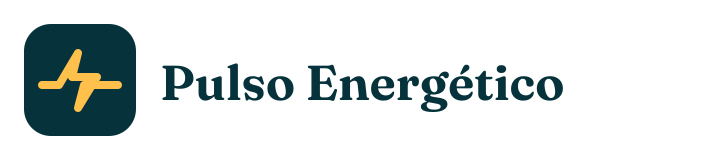
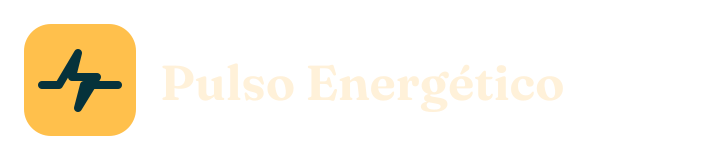

Identidad para un prototipo comunitario. Un pulso que permite seguir el consumo; un rayo que lo vincula con la energía.
El lienzo ya incluye 24 u de margen respecto del símbolo de 112 u. Conservar ese margen en los cuatro lados; no recortar el SVG. Horizontal mínimo: 220 px / 58 mm; vertical: 144 px / 38 mm; isotipo: 32 px / 8,5 mm. Favicon: excepción optimizada de 32 px.


El pulso-rayo tiene el mejor reconocimiento a pequeña escala y funciona a una tinta. Se aleja del enchufe genérico y de una promesa solar que el prototipo no mide.
02 / Conexión compartida. Enchufe con onda: dos localidades, una lectura común.
03 / Luz con límite. Sol abierto y línea de umbral: muestra el margen disponible.
#06323B
#FFF1D9
#FFC04C
#176B46
#B42318
#08272E
AA para texto normal ≥ 4,5:1. Ratios exactos: tokens.json. Dorado sobre crema: solo adorno; para texto usar #805000. En Noche: estados verde #83D9AA y rojo #FF9B91. La alerta siempre combina rojo + texto explícito; el umbral suma línea discontinua. ODS 7 usa amarillo: este verde es propio de los estados de la app.
Fraunces 600 · Aa
Titulares editoriales y marca. Reservar para títulos; evitar cifras de telemetría en serif.
DM Sans 400–700 · 0,240 kWh
Interfaz, botones y cifras con tabular-nums. Archivos WOFF2 y TTF locales en fonts/; ambas SIL OFL 1.1. Licencias incluidas.
tabular-nums
fonts/
«Quedan 0,24 kWh para el límite».
«Presupuesto alcanzado. Revisa las zonas encendidas».
Claro, local y directo. Usar Cuenca y Puente Alto; unidades visibles y coma decimal. Identificar siempre Datos simulados. Los beneficios climáticos son hipótesis por validar; no prometer ahorro ni reducción de emisiones demostrados.
Ejemplo editorial. En 390 px, usar isotipo de 32 px junto al nombre accesible; preservar las dos filas del encabezado, el menú y las áreas táctiles de 44 px. Las banderas se acompañan de nombres, sin escudos.
Qué está encendido.Cuánto lleva consumido.Cuánto falta para el límite.